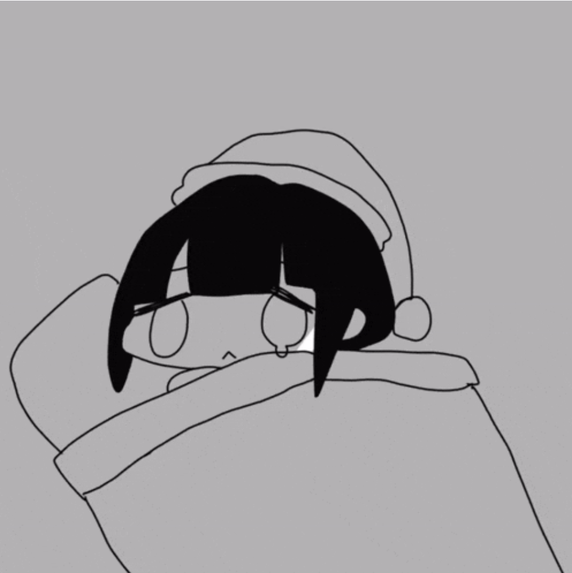

제 웹사이트에 오신 것을 환영합니다.

위의 인형은 일러스트레이터 ''따끈따끈주먹밥'님의 오리지널 캐릭터인 '오사게쨩'을 봉제인형으로 만든 제품입니다.
정말 아름답지 않나요?
위의 제품은 펀딩 사이트 'campfire'에서 2022년과 2023년 8월 한 달간 펀딩을 통해 두차례 한정 제작 되었습니다.
게다가 아마존과 이베이에 올라온 중고 오사게쨩은 한화로 20만원을 웃도는 가격으로 바가지를 씌워 판매되고 있습니다.
이 링크로 들어가 '재프로젝트' 버튼을 한 번씩 눌러주세요!
여러분의 소중한 관심 하나하나가 오사게쨩을 더 행복하게, 그리고 더 많은 사람에게 전달되게 만들어 줄 수 있습니다.
제 X 주소는 X(전 트위터)